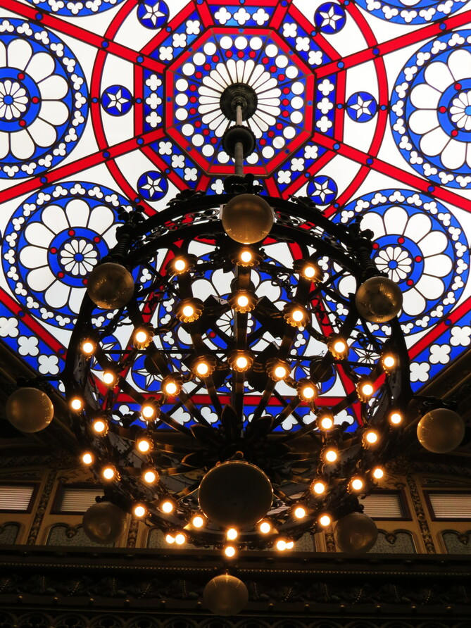
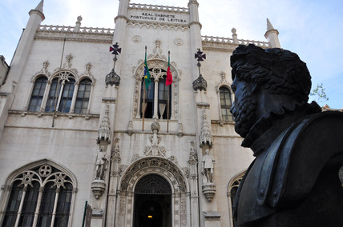

Foi eleito pela revista Time a quarta mais bonita biblioteca do mundo, em uma lista divulgada em 2014.

A biblioteca recebe de Portugal, pelo estatuto do “depósito legal”, um exemplar das obras publicadas no país. Além de Macau, agora sob a soberania da República Popular da China, e que até há pouco tempo também era beneficiada com o “depósito legal”, o Real Gabinete é a única instituição, fora do território português, que mantém este privilégio.
O prédio histórico foi utilizado como locação para filmes, telenovelas e especiais de televisão, tais como: as séries de TV "Os Maias" (2001), "Mad Maria" (2005), "Primo Basílio" (1988). E também o filme "O Xangô de Baker Street" (2001); 